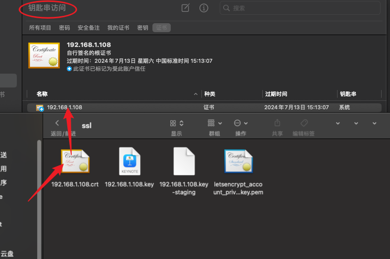

2024-06-13
Git教程
修改于: 2024-06-23使用gitlab-ce搭建git服务器
采用docker-compose + https部署
yaml文件(使用默认生成的证书)
services:
gitlab:
container_name: 'gitlabCe16_5_8' #容器名
image: 'gitlab/gitlab-ce:16.5.8-ce.0'
restart: always
# restart: unless-stopped
# hostname: 'gitlab.example.com'
environment:
TZ: 'Asia/Shanghai'
# | 表示下面配置是多行配置
GITLAB_OMNIBUS_CONFIG: |
# external_url 'http://192.168.1.108' # git拉代码的IP地址，公网IP和内网IP均可
# gitlab_rails['gitlab_shell_ssh_port'] = 2222
# unicorn['port'] = 8888
# nginx['listen_port'] = 80
nginx['listen_addresses'] = ['127.0.0.1','*', '[::]']
# 开启 https
nginx['listen_port'] = 443
external_url 'https://192.168.1.108:8443'
nginx['redirect_http_to_https'] = true
# 将 80 端口的转发到 external_url/url
nginx['redirect_http_to_https_port'] = 80
ports: #端口映射，可以自行配置
- '9080:80'
- '8443:443'
- '2222:22'
volumes: #目录挂载，可以自定义
- /Volumes/WinterSamsung/Project/Docker/Gitlab/config:/etc/gitlab
- /Volumes/WinterSamsung/Project/Docker/Gitlab/data:/var/opt/gitlab
- /Volumes/WinterSamsung/Project/Docker/Gitlab/logs:/var/log/gitlab
- /etc/localtime:/etc/localtime:ro
shm_size: '256m'
启动
docker-compose up -d
效果
访问https的8443端口(访问80会自动切到8443)
管理员账户密码
低版本, 第一次启动时会提示设置账户密码; 高版本直接提示在日志里的, 日志太长一般又不会去看
注解
密码会在24小时后删除, 请记住/及时修改
用户名:
root
密码:
cat /etc/gitlab/initial_root_password
如果忘记密码可以直接上服务器修改
# 进入容器
docker exec -it gitlab14 bash
# 执行：
# 进入控制台
gitlab-rails console -e production
# 查询id为1的用户，id为1的用户是超级管理员
user = User.where(id:1).first
# 修改密码
user.password='Rootgitlab12345.'
user.password_confirmation='Rootgitlab12345.' # 可忽略
# 保存
user.save!
# 退出
quit
exit
# 参考: https://blog.csdn.net/GodDavide/article/details/139182475
配置中文
gitlab版本: 16.5.8
配置位置
选择中文后保存刷新即可
浏览器信任自签证书
系统: macOS
双击证书, 使用 钥匙串访问 打开

双击此证书, 设置为 始终信任 (建议不使用时移除)
导入外部项目
管理员 需要配置支持哪些服务器导入
然后用户就可以选择导入了
导入外部自己项目
如果是github自己项目, 需要去 https://github.com/settings/tokens 配置一下token,
然后就可以直接导入了
如果是开源项目, 那只要有url就行